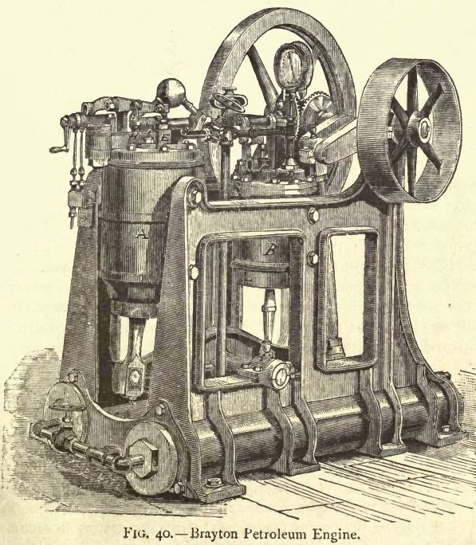
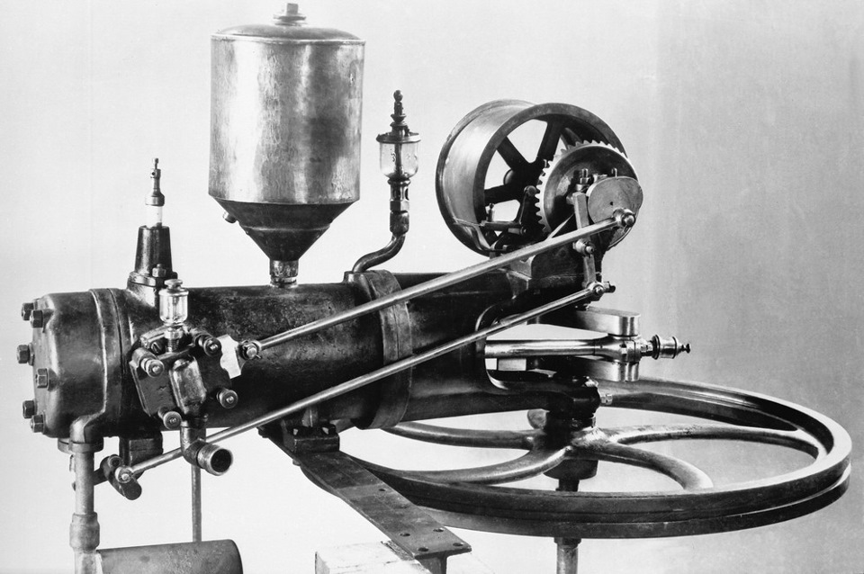
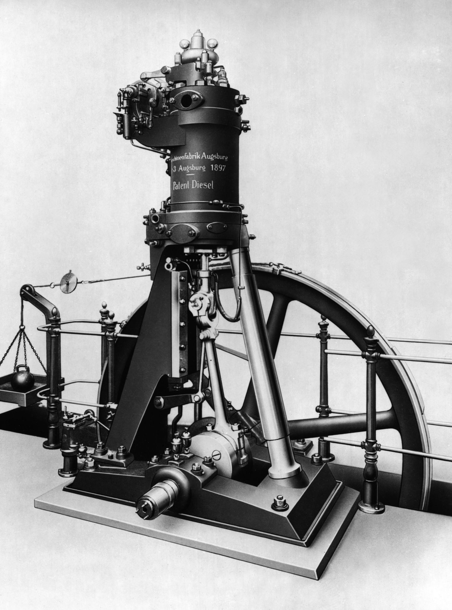

Сначала была простейшая паровая машина, изобретенная Папеном в 16 веке
 После Дени Папена Джон Барбер в 1791 году изобрел и запатентовал газовую турбину
После Дени Папена Джон Барбер в 1791 году изобрел и запатентовал газовую турбину
 В 1801 году Лебон, основываясь на свойстве светильного газа*, создал и запатентовал конструкцию газового двигателя (газ ≠ пар)
В 1801 году Лебон, основываясь на свойстве светильного газа*, создал и запатентовал конструкцию газового двигателя (газ ≠ пар)

1872 год. Американец Джордж Брайтон изобрел первый коммерческий двигатель внутреннего сгорания на жидком топливе, то есть на керосине

1879 год. Карл Бенц запатентовал двухтактный бензиновый двигатель. И вообще запатентовал практически все системы автомобиля. А еще основал компанию Мерседес-Бенц.
Через 7 лет начал первое коммерческое производство автомобилей с двигателем внутреннего сгорания, в котором трехколесный, четырехцилиндровый двигатель и шасси составляли единое целое

Ну а вскоре после появления моторизированной повозки Бенца, Рудольф Дизель разработал первый двигатель с воспламенением от сжатия со сжатым зарядом, то есть дизельный двигатель.